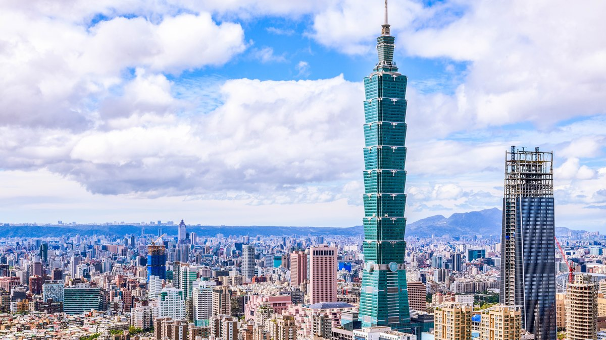

|
 | |
|
| MITSUI OUTLET PARK 林口 | 台北101購物中心 | 美麗華百樂園 | 研習心得 |

環保與可持續性：
採用多項環保建材和技術，如高效節能的空調系統和照明系統，降低能耗。
設置綠化屋頂和垂直綠化，提升建築的生態效益。
抗震結構：
建築結構設計符合台灣的抗震標準，採用了先進的抗震技術，確保建築在地震中的安全性。
基礎結構深植於地下，使用高強度鋼材和混凝土，提升建築的穩定性。
建材選擇：
使用高品質的建築材料，如低輻射玻璃，提升能源效率並減少碳排放。
內部裝修材料選用環保型材質，減少對環境的影響。
施工階段：
工程分為多個階段，包括基礎施工、結構施工、幕牆安裝和內部裝修等。
施工過程中使用了高效的施工技術和設備，確保工程進度和質量。
安全與管理：
嚴格遵守建築安全規範，保障施工現場的安全和工人健康。
採用現代化的施工管理系統，確保各項工作的有序進行。